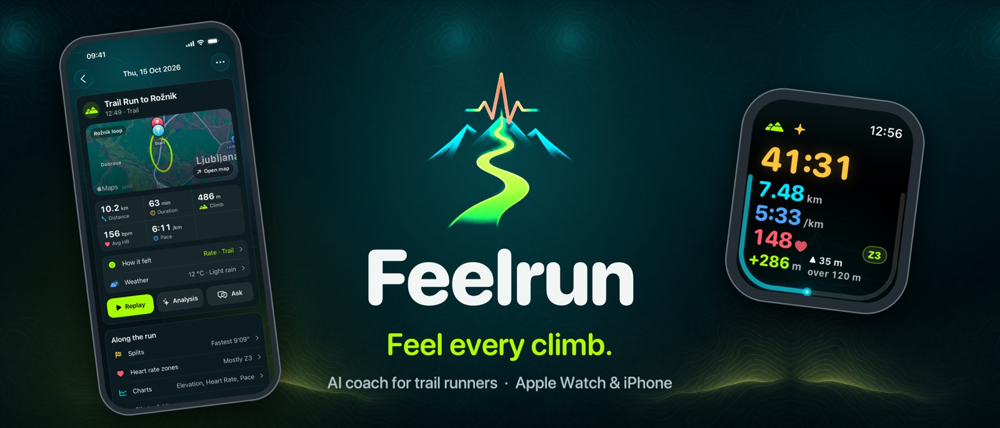

Apple Watch · iPhone
A running coach made for trails and hills.
Feelrun records your runs, hikes and walks, coaches you through the climb ahead, and plans your weeks to your goal race.
Integrates with Apple Health: it reads your workout history and saves the runs you record.
10.2km +486m 1:03h 156bpm 6:11/km
A sample trail run, in the colours Feelrun gives each measure.
On iPhone
Every run in detail, and a coach who knows them


What it does
Record, understand, coach
Record
- Record runs, hikes and walks on Apple Watch or iPhone, saved to Apple Health
- Time, distance, pace, heart rate, zone and climb at a glance on the watch
- Spoken cues with your pace, and alerts at the heart-rate, distance and time limits you set
- Off-route alert, and a sunset warning that reckons the way back from where you are
Understand, always yours to read
- Every run in detail: map, splits, heart-rate zones, charts, weather and how it felt
- Route and climb comparisons with your earlier runs
- Replay any run on the map, and save it as a video
Coach and plan
- AI coach: cues written for you during the run, an analysis of every run, and a chat about your training
- A training plan to your goal race, week by week, around your week and the weather forecast
- Live sharing: someone at home follows your run on a map, live
On Apple Watch
What matters, at a glance on the climb


Private by design
No account, no Feelrun server, no tracking. Your runs stay on your iPhone and in Apple Health.
The AI coach uses your own OpenAI or Anthropic key, and asks before any workout data is sent. How to set up your key.